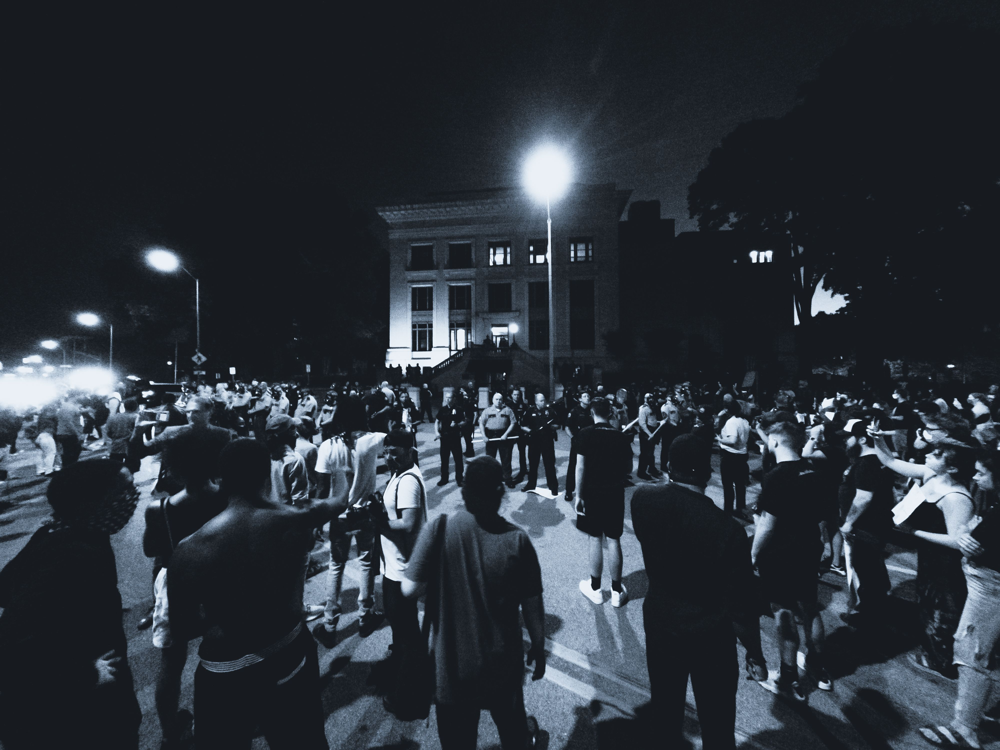

A Noite da
Esplanada
Em que o povo fiel é conduzido até o precipício
por vozes que não estariam lá para ver a queda
"Se o leão não pode se defender das armadilhas, é preciso ser também raposa. Aquele que somente sabe ser leão não entende o que faz."
Nicolau Maquiavel — O Príncipe, Capítulo XVIII
Por setenta e três dias, os acampamentos resistiram. Não por disciplina imposta — não havia general dando ordens ali, nenhum sargento vistoriando barracas ao amanhecer — mas pela disciplina espontânea dos que acreditam em algo maior do que si mesmos e sabem, com aquela certeza que não precisa de argumento, que o momento pede seriedade. Nas praças em frente aos quartéis-generais de cada cidade de Granvia, o povo havia erguido sua presença como se erguesse uma prece: permanente, voluntária, e estranhamente ordeira para um país que tinha o caos no sangue.
Não houve uma lixeira virada. Não houve uma vitrine quebrada. Uma câmera de segurança de um banco na Avenida Central registrou, na quarta semana de acampamento, um homem de uns cinquenta anos recolhendo do chão um copo plástico que não era dele e depositando-o na lata de lixo a três metros de distância. A câmera registrou também que o homem olhou para os lados antes de fazer isso — não com a culpa de quem faz algo errado, mas com o orgulho contido de quem pratica uma virtude pequena num momento em que virtudes pequenas constroem algo grande.
Os analistas políticos de Granvília escreveram artigos sobre a natureza conservadora do eleitorado de Veras, sobre sua obediência atávica às hierarquias, sobre o paternalismo que explicaria tamanha ordem. Nenhum deles escreveu o que era mais simples e mais verdadeiro: aquelas pessoas tinham algo a defender, e quem tem algo a defender não destrói.
A convocação chegou por mensagem. Não uma mensagem — dezenas de mensagens, simultâneas, coordenadas com uma precisão que os acampados interpretaram como sinal de organização e que era, de fato, sinal de outra coisa inteiramente. Os remetentes eram figuras conhecidas do Movimento: vozes que haviam soado durante meses nos canais digitais, nos grupos de família, nas transmissões ao vivo onde a indignação era servida com a regularidade das refeições.
O texto variava na forma mas não no conteúdo. A versão mais compartilhada dizia:
"A hora chegou. Não podemos mais ficar apenas nos quartéis. A Esplanada nos chama. O país nos chama. Granvia nos chama. Quem ama a pátria sabe o que fazer."
Era uma mensagem construída com o conhecimento preciso do que move esse tipo de pessoa: não a raiva, que é instável, mas a honra, que é inabalável. Quem ama a pátria sabe o que fazer. Não havia instrução concreta, não havia plano declarado, não havia líder identificado. Havia apenas o apelo — e o apelo era suficiente, porque havia setenta e três dias de combustível acumulado esperando uma faísca.
O professor Aniceto Braga, sessenta e oito anos, veterano de duas greves de professores e uma ocupação estudantil nos anos de chumbo, leu a mensagem às seis da manhã do dia marcado. Havia acampado durante quarenta e um dos setenta e três dias. Leu a mensagem, fechou o celular, abriu de novo, releu. Sentiu uma coisa que não sabia nomear com precisão mas que reconheceu: era a sensação de que algo estava errado no convite, embora não conseguisse dizer o quê.
Mas foi. Porque setenta e três dias de espera produzem uma pressão que vence quase todas as hesitações.
A Esplanada Cívica de Granvília era o coração monumental da capital: um espaço aberto de quatrocentos metros entre o Palácio do Governo e o Tribunal Supremo, ladeado pelo edifício do Parlamento ao norte e pelo Ministério da Cultura ao sul. Fora desenhada por um arquiteto do século passado que havia declarado, com a arrogância dos que constroem para a eternidade, que aquele espaço deveria pertencer ao povo nos dias de festa e à história nos dias de crise. Não havia especificado o que acontecia quando festa e crise coincidiam.
Os acampados chegaram ao longo da manhã. Vieram dos acampamentos dos quartéis, vieram de ônibus fretados do interior, vieram de cidades vizinhas em comboios de carros com bandeiras nas janelas. O professor Aniceto chegou às dez e meia, de metrô, com sua mochila habitual — a que havia carregado durante quarenta e um dias e que continha uma garrafa térmica, um poncho impermeável, um terço e uma fotografia plastificada dos netos.
Foi nesse momento que ele percebeu as outras mochilas.
Eram diferentes. Não nas mochilas em si — qualquer um podia carregar qualquer mochila — mas em tudo ao redor delas. Os que as carregavam chegavam em grupos pequenos, de três ou quatro, por rotas laterais, evitando os corredores centrais onde a multidão era mais densa e os celulares mais ativos. Usavam bonés de aba baixa e óculos escuros, combinados com um lenço escuro amarrado abaixo dos olhos — não a máscara sanitária que o mundo havia normalizado, mas o lenço de quem não quer ser reconhecido.
Nos setenta e três dias de acampamento, ninguém havia usado máscara. Não porque fossem imprudentes — muitos eram idosos — mas porque ali era uma manifestação de rostos, de identidades, de pessoas que estavam com o próprio nome estampado no que faziam e queriam que o mundo soubesse. A máscara era a negação disso. A máscara dizia: o que vou fazer, prefiro que não seja associado a mim.
não precisava de máscara para fazer o que havia ido fazer.
Quem precisava de máscara havia ido fazer outra coisa.
O professor tentou localizar no celular alguma das vozes que haviam enviado a convocação. As mensagens não respondiam. Os canais digitais que, na véspera, haviam transmitido ao vivo durante horas chamando o povo à Esplanada estavam, naquele momento, silenciosos.
Não silenciosos como quem gravou e parou. Silenciosos como quem desligou e saiu.
O que aconteceu nas horas seguintes foi filmado por duzentas e quarenta e três câmeras identificadas. As imagens mostrariam duas populações distintas ocupando o mesmo espaço com finalidades diferentes.
Uma: o povo que havia acampado setenta e três dias. Gritava, chorava, rezava, cantava o hino com a mão no peito. Estava ali com a enormidade emocional de quem espera uma virada histórica e ainda acredita que ela pode acontecer se o corpo for suficientemente presente, se a voz for suficientemente alta, se a fé for suficientemente teimosa.
Outra: os de máscara e mochila. Moviam-se com uma eficiência que o professor Aniceto, observando da periferia da multidão, descreveria depois ao filho como "profissional — pareciam saber exatamente onde estavam indo, o que é muito estranho quando você está numa multidão sem plano declarado." Convergiam para os edifícios com a determinação dos que receberam coordenadas. E as mochilas, quando abertas, continham não terços nem garrafas térmicas.
Continham as ferramentas de quem não foi protestar.
O Tribunal Supremo de Granvia levou vinte e dois minutos para ser invadido. O Parlamento, dezesseis. O Palácio do Governo, trinta e oito. Os danos foram extensos — obras de arte que haviam sobrevivido a três guerras civis e dois golpes de Estado não sobreviveram àquela tarde.
O professor Aniceto não entrou em nenhum dos edifícios. Ficou na Esplanada, imóvel, vendo. Não conseguia entender o que estava vendo — não porque fosse ingênuo, mas porque a mente humana tem uma resistência natural a aceitar que foi usada. Que a lealdade foi transformada em instrumento. Que a presença foi convertida em cobertura.
Quando a cavalaria da segurança pública chegou, duas horas depois — duas horas que os investigadores independentes também achariam dignas de nota — a Esplanada começou a ser evacuada. O professor foi detido junto com centenas de outros que haviam ficado do lado de fora, que haviam gritado o hino, que não haviam entrado, que não haviam quebrado nada, mas que estavam lá.
Naquela noite, enquanto as imagens dos edifícios saqueados percorriam os canais de televisão de Granvia e do mundo inteiro, um avião decolou do aeroporto internacional de Granvília com destino a Lisboa. Entre os passageiros da classe executiva estava uma figura conhecida do Movimento — uma das vozes que havia enviado a convocação na madrugada anterior, que havia transmitido ao vivo na véspera exortando o povo a "não recuar."
Sua esposa havia viajado três dias antes. Assessora de um dos dirigentes do Movimento, ela havia partido com a discrição de quem resolve assuntos particulares e chegado a um apartamento em Lisboa alugado com seis semanas de antecedência.
Do aeroporto, a figura não deu declarações. Todos os seus perfis digitais haviam sido colocados em modo silencioso no exato momento em que as primeiras janelas do Tribunal Supremo quebravam. A sincronia era, considerando tudo, notável.
O professor Aniceto Braga passou a noite numa cela provisória montada num ginásio municipal, junto com quatrocentos e dezasseis outros detidos. Ao amanhecer, quando um funcionário passou distribuindo copos de água, o professor perguntou se havia alguma informação sobre quando seriam ouvidos.
"Não tenho informação, senhor. O processo vai ser longo."
O professor assentiu. Abriu a mochila — a mesma de sempre, com a garrafa térmica, o poncho, o terço e a fotografia dos netos — e ficou olhando para a fotografia por um tempo que não soube medir. Depois fechou a mochila, encostou a cabeça na parede de concreto e pensou naquilo que havia sentido ao ler a convocação naquela manhã: a sensação de que algo estava errado no convite.
Havia estado certo. Havia ido mesmo assim.
Era isso que o destruía — não a prisão, não o processo que viria, não os meses de incerteza. Era a clareza tardia de ter sentido o perigo e escolhido a fé. De ter sido, no sentido mais preciso e mais cruel da palavra, um instrumento.
Lá fora, sobre o Atlântico, o avião para Lisboa cruzava a madrugada em altitude de cruzeiro. Na classe executiva, com uma taça de vinho que custava mais do que o dia de trabalho de qualquer um dos quatrocentos e dezasseis detidos no ginásio municipal, a figura do Movimento reclinava o assento e fechava os olhos.
é devorado pelas raposas que aprenderam a rugir.